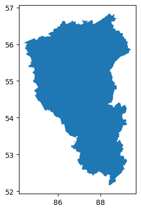
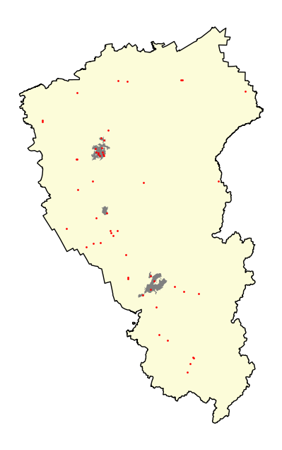
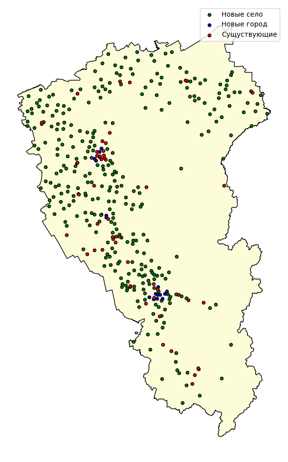
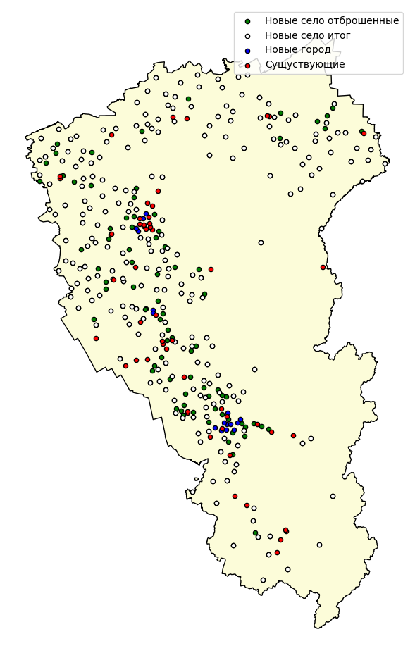

flowchart LR
subgraph main_data_load[Загрузка данных]
direction LR
load_units["ПСЧ"]
load_all_gds["ГДС
региона"]
load_city_bounds["Границы
населенных
пунктов"]
load_city_points["Точки
городов"]
end
subgraph city_calc[Расчет городов]
direction TB
cily_algs("Настройка
алгоритма
для
городов")
for_all_city_0[/"Каждый
город"\]
load_city_data("Загрузка данных
в городе
---
ГДС, ПСЧ, здания, ...")
city_calc_cur("Расчет
размещения
для
города")
city_result["Размещение
ПСЧ
в городе"]
city_analize("Анализ")
for_all_city_1[\"Каждый
город"/]
for_all_city_0 --> load_city_data --> city_calc_cur --> city_result --> city_analize --> for_all_city_1
end
main_data_load ---> city_calc
cily_algs --> for_all_city_0
city_calc --> units_temp_1
units_temp_1["ПСЧ
в городах"]
subgraph region_calc[Расчет региона]
direction TB
region_algs("Настройка
алгоритма
для
региона")
region_calc_cur("Расчет
размещения
для
региона")
region_algs --> region_calc_cur
end
main_data_load --> region_calc
units_temp_1 --> region_calc
main_result["Результат
Размещение ПСЧ
в городах и сельской местности"]
region_calc --> main_result
style main_data_load fill:transparent, stroke:#333, stroke-width:4px
style city_calc fill:transparent, stroke:#333, stroke-width:4px
style region_calc fill:transparent, stroke:#333, stroke-width:4px
12 Проведение расчетов для нескольких населенных пунктов
Зачастую перед пользователем встает задача одновременного (пакетного) проведения расчета нескольких населенных пунктов, которые могут также быть соотнесены друг с другом.
Наиболее часто подобная задача встает перед пользователем в случае, если необходимо провести расчет требуемого количества подразделений для некоторого крупного региона включающего ряд населенных пунктов или административных единиц.
Рассмотрим пример подобного расчета.
В данном примере будут использованы данные выгружаемые из OSM непосредственно в ходе расчета. см. раздел Основные сведения о OSMnx.
12.1 Подключение требуемых библиотек
import numpy as np
import osmnx as ox
import pandas as pd
import geopandas as gpd
import matplotlib.pyplot as plt
import genesis as genesis
# Разрешаем выгружать данные частных дорог
ox.settings.default_access = ''
# Версии библиотек
print('OSMnx:', ox.__version__,
'\nGeoPandas:', gpd.__version__,
'\nPandas:', pd.__version__,
'\ngenesis:', genesis.__version__,
)OSMnx: 2.0.1
GeoPandas: 1.0.1
Pandas: 2.2.2
genesis: 0.1.03612.2 Загрузка исходных данных
Загрузка ГДС
from graphs.speeds import set_graph_travel_times, kmh_to_mm
from fire_units.settings import DEFAULT_SPEEDS
G = ox.graph_from_xml('data/kemerovo/Kemerovo OblastKuzbass.osm', simplify=False)
## Установка скоростного режима
set_graph_travel_times(
G,
speeds=DEFAULT_SPEEDS,
morph_function = kmh_to_mm)
## Упрощение графа (уменьшение количества узлов)
G = ox.simplification.simplify_graph(G)Загрузка границ региона
borders = ox.geocode_to_gdf('Кемеровская область, Россия')
borders.plot()
Загрузка точек населенных пунктов
# Тег OSM для зданий
tags = {
'place': ['city', 'town', 'village'], #, 'hamlet', 'locality'],
}
# Словарь полей, которые следует оставить в наборе. Если не использовать, будут сохранены излишние данные
fields = [
'name',
'place',
'geometry',
]
# Загрузка набора данных из OSM
settlements_points = ox.features_from_polygon(borders.union_all(), tags)
# Приводим геометрию к точке (в локальной СК, во избежание ошибок)
settlements_points = ox.projection.project_gdf(settlements_points)
settlements_points['geometry'] = settlements_points.geometry.centroid
settlements_points = ox.projection.project_gdf(settlements_points, to_latlong=True)
# Оставляем только заданные поля (и при этом имеющиеся в списке полученных)
fields = list(set(settlements_points.columns) & set(fields))
settlements_points = settlements_points[fields]
# Удаляем индекс по типу элемента
settlements_points = settlements_points.reset_index().drop('element', axis=1)
# Устанавливаем индекс 'id'
settlements_points = settlements_points.set_index('id')
# Печать результатов
print('Населенных пунктов:', len(settlements_points))
settlements_points.head()C:\Users\obsid\AppData\Roaming\Python\Python312\site-packages\osmnx\_overpass.py:267: UserWarning: This area is 46 times your configured Overpass max query area size. It will automatically be divided up into multiple sub-queries accordingly. This may take a long time.
multi_poly_proj = utils_geo._consolidate_subdivide_geometry(poly_proj)Населенных пунктов: 913| name | place | geometry | |
|---|---|---|---|
| id | |||
| 27505477 | Новокузнецк | city | POINT (87.13585 53.75759) |
| 178926370 | Тайга | town | POINT (85.63132 56.06507) |
| 191779212 | Прокопьевск | city | POINT (86.74921 53.88791) |
| 191908717 | Киселёвск | town | POINT (86.63548 54.00499) |
| 191908717 | Киселёвск | town | POINT (86.63548 54.00499) |
Загрузка пожарных подразделений
# Тег OSM для зданий
tags = {'amenity': 'fire_station'}
# Словарь полей, которые следует оставить в наборе. Если не использовать, будут сохранены излишние данные
fields = [
'name',
'operator',
'fire_station:type',
'addr:street',
'addr:housenumber',
'geometry',
]
# Загрузка набора данных из OSM
units = ox.features_from_polygon(borders.union_all(), tags)
# Приводим геометрию к точке
units['geometry'] = units.geometry.centroid
# Оставляем только заданные поля (и при этом имеющиеся в списке полученных)
fields = list(set(units.columns) & set(fields))
units = units[fields]
# Удаляем индекс по типу элемента
units = units.reset_index().drop('element', axis=1)
# Заполняем названия подразделений
units['name'] = 'сущ. ' + pd.Series(range(1, len(units) + 1)).astype(str)
# Устанавливаем индекс 'id'
units = units.set_index('id')
# Печать результатов
print('Подразделений:', len(units))
units.head()C:\Users\obsid\AppData\Roaming\Python\Python312\site-packages\osmnx\_overpass.py:267: UserWarning: This area is 46 times your configured Overpass max query area size. It will automatically be divided up into multiple sub-queries accordingly. This may take a long time.
multi_poly_proj = utils_geo._consolidate_subdivide_geometry(poly_proj)Подразделений: 53C:\Users\obsid\AppData\Local\Temp\ipykernel_3888\2097302544.py:17: UserWarning: Geometry is in a geographic CRS. Results from 'centroid' are likely incorrect. Use 'GeoSeries.to_crs()' to re-project geometries to a projected CRS before this operation.
units['geometry'] = units.geometry.centroid| operator | name | addr:housenumber | fire_station:type | geometry | addr:street | |
|---|---|---|---|---|---|---|
| id | ||||||
| 506074900 | NaN | сущ. 1 | NaN | NaN | POINT (86.44054 54.43532) | NaN |
| 1063560909 | NaN | сущ. 2 | NaN | NaN | POINT (86.22367 54.63829) | NaN |
| 1204141457 | NaN | сущ. 3 | NaN | NaN | POINT (87.86841 52.76413) | NaN |
| 1304830390 | NaN | сущ. 4 | NaN | NaN | POINT (87.7948 53.71559) | NaN |
| 1399480141 | NaN | сущ. 5 | NaN | NaN | POINT (86.65635 53.86747) | NaN |
Уведомление
В данном случае данные о ПСЧ выгружаются из OSM. Такие данные редко имеют корректные названия подразделений. Поэтому названия присваиваются по порядку:
units['name'] = 'сущ. ' + pd.Series(range(1, len(units) + 1)).astype(str)В реальных расчетах при работе с реальными данными, такая операция не требуется.
Загрузка границ крупных городов
# Список городов
city_list = [
'Кемерово, Кемеровская область, Россия',
'город Новокузнецк, Кемеровская область, Россия',
'Ленинск-Кузнецкий, Кемеровская область, Россия',
]
# Геокодирование городов, для полуения границ
cities = ox.geocode_to_gdf(city_list)
cities['name'] = city_list
cities| geometry | bbox_west | bbox_south | bbox_east | bbox_north | place_id | osm_type | osm_id | lat | lon | class | type | place_rank | importance | addresstype | name | display_name | |
|---|---|---|---|---|---|---|---|---|---|---|---|---|---|---|---|---|---|
| 0 | POLYGON ((85.9095 55.31808, 85.90959 55.31797,... | 85.909499 | 55.256576 | 86.29204 | 55.544921 | 202002156 | relation | 1312868 | 55.355091 | 86.087121 | place | city | 16 | 0.579964 | city | Кемерово, Кемеровская область, Россия | Kemerovo, Kemerovsky Urban Okrug, Kemerovo Obl... |
| 1 | POLYGON ((86.85922 53.65112, 86.85939 53.65048... | 86.859219 | 53.640326 | 87.45095 | 53.948292 | 200804424 | relation | 1437127 | 53.757590 | 87.135849 | place | city | 16 | 0.579239 | city | город Новокузнецк, Кемеровская область, Россия | Novokuznetsk, Novokuznetsky Urban Okrug, Kemer... |
| 2 | POLYGON ((86.12103 54.70258, 86.13238 54.69554... | 86.121032 | 54.614967 | 86.25300 | 54.719928 | 200641036 | way | 92753879 | 54.665443 | 86.166115 | place | town | 18 | 0.479145 | town | Ленинск-Кузнецкий, Кемеровская область, Россия | Leninsk-Kuznetsky, Leninsk-Kuznetsky Municipal... |
Уведомление
В данном случае здания будут выгружаться для каждого города в цикле расчета.
Печать карты исходных данных
fig, ax = plt.subplots(figsize=(8,8))
borders.plot(ax=ax, color='#fcfcd9', edgecolor='black')
cities.plot(ax=ax, color='gray')
units.plot(ax=ax, color='r', markersize=1)
ax.set_axis_off()
plt.show()
12.3 Расчет городов
Перебираем все интересующие нас города и проводим для каждого из них расчет. Используется алгоритм ADD, поэтому в данном случае алгоритм будет собираться и инициироваться отдельно для каждого города, поскольку для каждого из них требуется проводить расчет матрицы прибытия.
from fire_units.settings import BUILDING_FIELDS
from genesis.states import FirstArrivalUnitState, get_atm
from fire_units.metrics import CoverIndexBuilding
from genesis.lscp import LSCP_ADD
# Целевое значение ИП-10
target_ip = 95
# Тег OSM для зданий
tags = {'building': True}
# Словарь полей, которые следует оставить в наборе. Если не использовать, будут сохранены излишние данные
fields = BUILDING_FIELDS
# Количество зданий которые будут учтены при расчет в каждом городе
sample_size = 2000
# Набор данных о узлах ГДС региона
g_nodes = ox.graph_to_gdfs(G, edges=False)
## Размер буферной зоны в метрах
buffer_size = 1000
# Набор полигонов границ городов с буферными зонами
cities_buffer = ox.projection.project_gdf(cities).copy()
cities_buffer = cities_buffer.buffer(buffer_size)
cities_buffer = ox.projection.project_gdf(cities_buffer, to_latlong=True)
# Словарь новых подразделений
new_units = {}
# Цикл перебора всех городов
for id, city in cities.iterrows():
print('Расчет для города:', city['name'])
# Получение границ города
city_boundary = city['geometry']
# Выборка ПСЧ в пределах полигона границ
city_units = units.loc[units.geometry.within(city_boundary)].copy()
print('Подразделений в городе:', len(city_units))
# Загрузка зданий в городе
# Загрузка набора данных из OSM
buildings = ox.features_from_polygon(city_boundary, tags)
# Оставляем только данные с геометрией Полигон или Мультиполигон
buildings = buildings[buildings.geometry.apply(lambda x: x.geom_type).isin(['Polygon', 'MultiPolygon'])]
# Оставляем только заданные поля (и при этом имеющиеся в списке полученных)
fields = list(set(buildings.columns) & set(fields))
buildings = buildings[fields]
# Удаляем индекс по типу элемента
buildings = buildings.reset_index().drop('element', axis=1)
# Устанавливаем индекс 'id'
buildings = buildings.set_index('id')
print('Зданий:', len(buildings))
# Получение подграфа города
## Получение полигона с буферной зоной
borders_buffer = cities_buffer.loc[id]
## Получение узлов графа в пределах полигона
city_nodes = g_nodes.loc[g_nodes['geometry'].within(borders_buffer)]
## Получение графа из узлов
G_city = G.subgraph(city_nodes.index)
print('Граф', G_city.number_of_nodes(), G_city.number_of_edges())
# Сопоставление с узлами графа
## Сопоставление зданий с ближайшими узлами ГДС
centroids = ox.projection.project_gdf(buildings).geometry.centroid
buildings['node'] = ox.distance.nearest_nodes(ox.project_graph(G_city),
centroids.x,
centroids.y
)
## Сопоставление пожарных подразделений с ближайшими узлами ГДС
centroids = ox.projection.project_gdf(city_units).geometry.centroid
city_units['node'] = ox.distance.nearest_nodes(ox.project_graph(G_city), centroids.x, centroids.y)
## Формирование словаря подразделений для передачи алгоритму
units_dict = {k:v for k,v in zip(city_units['node'], city_units['name'])}
# Расчет матрицы прибытия
# Определяем количество зданий которые будут рассчитаны
if len(buildings) <= sample_size:
data_sample = buildings
else:
data_sample = buildings.sample(sample_size)
## Вычисление матрицы прибытия
matrix = get_atm(G,
data = data_sample,
cutoff = 10,
)
# Сборка и инициализация алгоритма:
## Выбор алгоритма моделирования параметров прибытия
state = FirstArrivalUnitState()
## Выбор метрики
metric = CoverIndexBuilding(data_sample, ip_val=10)
## Функция остановки
stop_case = lambda value, **kwargs: value >= target_ip
## Функция выполняемая при добавлении новой ПСЧ
after_mclp = lambda best_metric, dynamic_nodes, **kwargs: print('Подразделений:', len(dynamic_nodes), ' ИП-10:', best_metric, end='\r')
## Сборка и инициализация алгоритма ADD
add = LSCP_ADD(
state_function = state,
matrix = matrix,
metric_function = metric,
stop_case_function = stop_case,
after_mclp_function = after_mclp,
start_names_index = len(new_units)+1,
)
# Расчет:
best_nodes, best_metric = add(
env = G,
static_nodes = units_dict,
)
# Обработка результатов
print('Количество подразделений необходимых к созданию:', len(best_nodes))
print('='*80)
print(' ')
# Объединение результатов:
new_units = {**new_units, **best_nodes}
# Обработка результатов
print('>>> Количество подразделений необходимых к созданию в городах:', len(new_units))
print('='*80)
print(' ')Расчет для города: Кемерово, Кемеровская область, Россия
Подразделений в городе: 11
Зданий: 37530
Граф 18174 44431
|########################################| 100.0%
Количество подразделений необходимых к созданию: 4
================================================================================
Расчет для города: город Новокузнецк, Кемеровская область, Россия
Подразделений в городе: 4
Зданий: 24860
Граф 13308 33278
|########################################| 100.0%
Количество подразделений необходимых к созданию: 10
================================================================================
Расчет для города: Ленинск-Кузнецкий, Кемеровская область, Россия
Подразделений в городе: 1
Зданий: 15068
Граф 3377 9147
|########################################| 100.0%
Количество подразделений необходимых к созданию: 2
================================================================================
>>> Количество подразделений необходимых к созданию в городах: 16
================================================================================
12.4 Расчет для региона в целом
Подготовка исходных данных
# Подготовка данных подразделений
## Сопоставление пожарных подразделений с ближайшими узлами ГДС
centroids = ox.projection.project_gdf(units).geometry.centroid
units['node'] = ox.distance.nearest_nodes(ox.project_graph(G), centroids.x, centroids.y)
## Формирование словаря имеющихся подразделений
existed_units_dict = {k:v for k,v in zip(units['node'], units['name'])}
## Объединяем словари имеющихся подразделений и дополнительных для защиты городов
existed_and_new_units_dict = {**existed_units_dict, **new_units}
# Подготовка данных о точках населенных пунктов
## Сопоставление населенных пунктов с ближайшими узлами ГДС
centroids = ox.projection.project_gdf(settlements_points).geometry
settlements_points['node'] = ox.distance.nearest_nodes(ox.project_graph(G), centroids.x, centroids.y)Расчет матрицы прибытия в населенные пункты
# Сет узлов в которых возможно размещение пожарных подразделений (населенные пункты + имеющиеся подразделения)
targets = set(list(existed_and_new_units_dict.keys()) + list(settlements_points['node']))
print(f'Расчет для {len(settlements_points)} населенных пунктов и {len(targets)} точек размещения')
# Расчет матрицы
matrix = get_atm(G,
data = settlements_points,
cutoff = 20,
target_set = targets,
)
print('Размер матрицы:', matrix.shape)
# Дополнительная проверка вхождения узла подразделений в матрицу
# В отдельных случаях подразделения могут оказаться расположены так, что ни в один
# населенный пункт они не будут успевать за время 10 или 20 минут.
# (в результате ошибки)
# Поэтому требуется дополнительная проверка
print('Проверка подразделений', len(existed_and_new_units_dict), end='->')
existed_and_new_units_dict = {k:v for k, v in existed_and_new_units_dict.items() if k in matrix.columns}
print(len(existed_and_new_units_dict))Расчет для 913 населенных пунктов и 846 точек размещения
|########################################| 100.0%
Размер матрицы: (860, 840)
Проверка подразделений 69->63Определение количества и оптимальной дислокации ПСЧ с целью достижения ИП-20 = 95%, с учетом имеющихся подразделений.
from genesis.lscp import LSCP_ADD
from genesis.states import FirstArrivalUnitState
from fire_units.metrics import CoverIndexBuilding
# 2. Сборка решения
## Выбор алгоритма моделирования параметров прибытия
state = FirstArrivalUnitState()
## Выбор метрики
metric = CoverIndexBuilding(settlements_points, ip_val=20)
## Функция остановки
stop_case = lambda value, **kwargs: value >= 95 # Расчет проводится для достижения ИП-20 = 95%
## Функция выполняемая при добавлении новой ПСЧ
after_mclp = lambda best_metric, dynamic_nodes, **kwargs: print('Подразделений:', len(dynamic_nodes), ' ИП-20:', best_metric, end='\r')
## Сборка и инициализация алгоритма ADD
add = LSCP_ADD(
state_function = state,
matrix = matrix,
metric_function = metric,
ip_value = 20, # ВАЖНО! Для ИП отличных от ИП-10, следует указывать явно!
stop_case_function = stop_case,
after_mclp_function = after_mclp,
names_pattern = 'село {}', # Шаблон имен подразделений
)
# 3. Расчет BLP
best_nodes, best_metric = add(
env = G,
static_nodes = existed_and_new_units_dict,
)
# 4. Печать результатов
print(' ')
print('ИТОГ:', len(best_nodes), best_metric)
print('Имеется подразделений:', len(units),
'Требуется создать:', len(best_nodes),
'Всего:', len(units)+len(best_nodes)) одразделений: 317 ИП-20: 95.071193866374594
ИТОГ: 317 95.07119386637459
Имеется подразделений: 53 Требуется создать: 317 Всего: 370## Печать карты
fig, ax = plt.subplots(figsize=(12,12))
borders.plot(ax=ax, color='#fcfcd9', edgecolor='black')
g_nodes.loc[best_nodes.keys()].plot(ax=ax, facecolors='g', edgecolors='k', markersize=20, label='Новые село')
g_nodes.loc[new_units.keys()].plot(ax=ax, facecolors='b', edgecolors='k', markersize=20, label='Новые город')
units.plot(ax=ax, facecolors='r', edgecolors='k', markersize=20, label='Сущуствующие')
ax.set_axis_off()
plt.legend()
plt.show()
Дополнительная проверка отбросом
Эвристические алгоритмы не предлагают точного решения - они лишь предлагают наилучшее из возможных к получению за ограниченное время. Поэтому зачастую предлагаемые решения могут содержать излишние подразделения. Для проверки и отброса таких рекомендаций используется функция drop_trash_points.
from genesis.lscp import drop_trash_points
def stop_case(iteration, value, dynamic_nodes, **kwargs):
print(iteration, ':', value, len(dynamic_nodes), end='\r')
return value >= 95
optimal_dynamic_nodes, current_metric = drop_trash_points(
env = G,
state_function = state,
metric_function = metric,
stop_case_function = stop_case,
dynamic_nodes = best_nodes,
static_nodes = existed_and_new_units_dict,
)
print('После отброса ошибочных ПСЧ:', len(optimal_dynamic_nodes))После отброса ошибочных ПСЧ: 237## Печать карты
fig, ax = plt.subplots(figsize=(12,12))
borders.plot(ax=ax, color='#fcfcd9', edgecolor='black')
g_nodes.loc[best_nodes.keys()].plot(ax=ax, facecolors='g', edgecolors='k', markersize=20, label='Новые село отброшенные')
g_nodes.loc[optimal_dynamic_nodes.keys()].plot(ax=ax, facecolors='w', edgecolors='k', markersize=20, label='Новые село итог')
g_nodes.loc[new_units.keys()].plot(ax=ax, facecolors='b', edgecolors='k', markersize=20, label='Новые город')
units.plot(ax=ax, facecolors='r', edgecolors='k', markersize=20, label='Сущуствующие')
ax.set_axis_off()
plt.legend()
plt.show()
На карте выше зелеными точками отмечены места размещения ПСЧ, которые были отброшены в результате проверки.
Видно что в результате общее количество предложенных мест дислокации уменьшилось с 317 до 237. Было отброшено, как излишние 80 мест размещения.